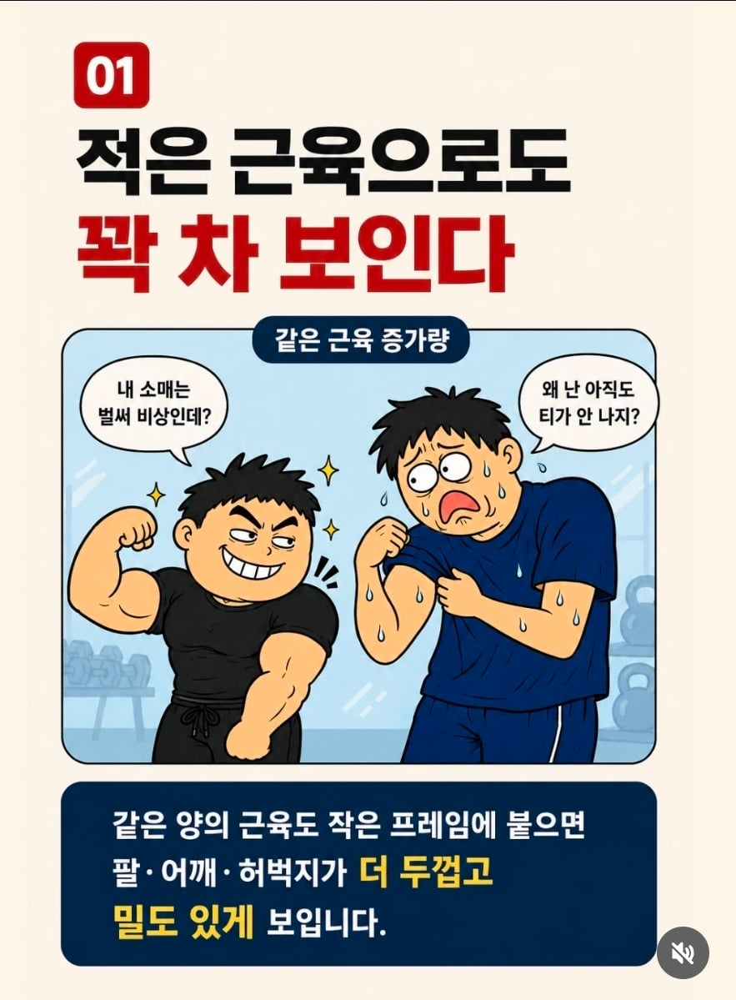
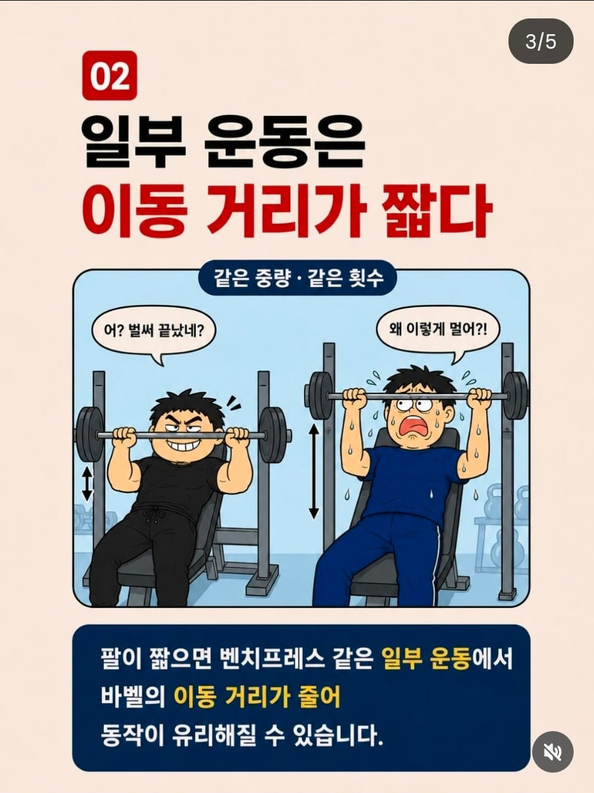
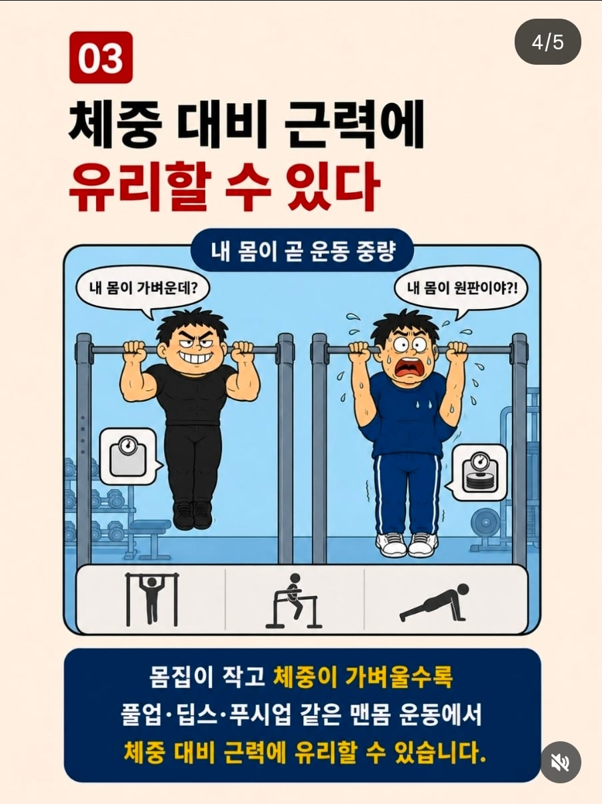
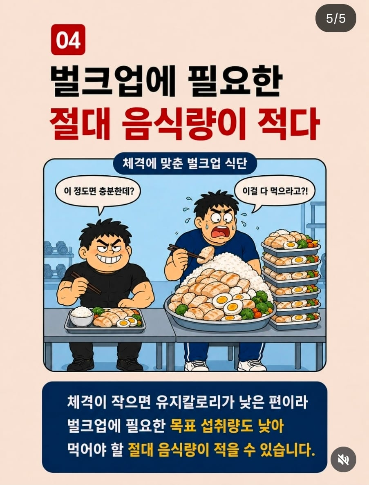

이렇게 몸만드는데 유리한데
키작다고 아무것도 안하고 키만 탓하는 애들은 답이없음
키작으면 몸이라도 키워야지




이렇게 몸만드는데 유리한데
키작다고 아무것도 안하고 키만 탓하는 애들은 답이없음
키작으면 몸이라도 키워야지
이거 키큰 멸치가 쓴글이잖아
결국 체질과 기본기 차이지
비슷한레벨 키차이 헬창들보면
몸이길고 클수록 근육량차이가 말도안됨
그래서 212 체급이이있고
종목이 키순으로 나누는 기준이 그거임
아무리 운동해도 결국 어느지점부터
뼈길이 길고 골격큰게 짱임…
의학적이나 과학적 근거 1도 없음..
그건 최상위클래스 얘기고 본문은 그냥 멸치~턱걸이 한두개 할 정도 얘기하는거잖어
그냥 둘 다 하든말든 자유인데 그 이유가 다르지.
좆만이새끼들은 운동을 하든 안하든 똑같이 존나게 볼품없고 병신같으니까 백날 해도 아무짝에도 쓸모없는거고
키크면 운동한 몸이든 멸치든 씹돼지든 키 그 자체로 존나 멋있고 듬직하니까 굳이 할 필요가 없는 거지
꼬마돌 꼬마돌 하는데 그 꼬마돌도 쉽게 되는거 아님
존나 운동해야 꼬마돌 되는건데 운동먼저 하자
꼬마돌들아 울지마라
다들 간과하고 있는게
키가 작아서 꼬마돌이 아니라 대가리가 크고 비율이 씹창이라 꼬마돌이 되는거임
태양 몸 보면 꼬마돌 소리가 나옴?
그리고 어차피 그 이상으로 키우지도 못함 1-2년 깔짝 해서는
아
태양은 전체적으로 슬림하니까 꼬마돌같지가않은거고 태양이 벌크키우면..꼬마돌된단다...비율좋아도 작으면 어쩔수가없어 특히 실제로 보면 그한계는 명확함 난 설기관도 실제로 봤는데 설기관키가 170이고 비율좋기로 탑급선수인데도 실제로 보면 꼬마돌느낌 못지움 키작으면 빵빵하게 키우면 무조건 꼬마돌느낌남
설기관은 솔직히 꼬마돌보단 괴력맨 느낌인데
실제로보면..어쩔수가없다..그래도 그중에선 제일 최상급 난쟁이임
태양 실제로 봄? 니가 미디어로 다듬어진 환상만 보는거 아니고?
3번그림 철봉이 대가리 관통했는데?
꼬마돌 졸라 많음 ㅋㅋ
ㄹㅇ ㅋㅋ 헬스장가면 꼬마돌 짱귀여움
와 정말 부럽다
아...
130cm랑 2m랑 비교하는거면 ㅇㅋ.
뭔 씨발 운동범위가 어떻고 니미 좆빠는 소리 씨부려놨냐 ㅋㅋㅋ
헬스 유리해봐야 그냥 위고비 마운자로선에서 컷 아닌지
그건 다이어트에서지 근육키우는거에서는 다른이야기란다
꼬마돌보다는 멸치가 훨 보기좋음 ㅋㅋㅋ 꼬마돌은 보는 순간 걍 웃김 ㅋㅋㅋㅋㅋ
꾸준히 운동하는거 진짜 대단한거같음
꼬마돌 놀리지 마라 나쁜놈들아
옥동자
2,3번은 의미가 없는 비교아닌가..
원룸 꽉 채우기vs투룸 쓰리룸 꽉 채우기
조~온나 부럽다ㅋㅋ
용찬우식 발상이네
500ml 물병과 1L 짜리 물병에 동일한 속도로 물을 채우는거라 생각하면 됨
지랄ㄴ
실제로 헬스 꾸준히한 후배, 실제 키보다 더 커보이더라
보이는 근육 형태에 대해서는 짧고 작으면 꽉차보이는게 맞는데 근력 관련해서는 스트롱맨중에 180미만 몇명인지나좀 알아봐라... ㅈ도안되는 모멘트암 이득보다 커서 얻는 강한관절, 근육량 이득이 훨씬 크다
키커서 유리한건 다 빼놓고, 키작아서 불리한건 다 빼놓고
키작은새끼 뭐 하나라도 특출난 거 보이면 작아서 유리하다 지랄
키큰새끼들 열등감이 어떻게 보면 더 심하다니까 ㅋㅋ
키 큰 새끼들이 열등감을 가질 일이 있나...?
이건 열등감이라기보다 키 큰 멸치들의 핑계에 가깝지
ㄴㄴ 자기보다 키작은사람이 신체적으로 뭐가 더 잘하는 게 있으면, 키작은데도 대단하네가 아니라 키작아서 유리하다는 걸 어떻게든 합리화 하려함. 달리기가 더 빨라? 키작아서 유리하네. 맨몸운동 더 잘해? 키작아서 유리하네. 삼대 무게를 더 많이쳐? 키작아서 유리하네. 근육볼륨이 더 커보여? 키작아서 유리하네. 춤을 더 잘춰보여? 키작아서 유리하네. 그럼 키큰 게 오히려 신체적으로 븅신이란 소린데 그런애들 자주 보여서 웃김
너키가168이하인건 알겠다야
키큰새끼들은 열등감 안가져 친구야.....그냥 난쟁이들 놀리는거임..키큰애들은 평생 작은애들이 우습게 보인단다..
실제로 헬스장엔 꼬마돌 많음 ㅋㅋ 그래도 하는게 나음 꼬마돌특유의 땅땅한멋이 있어 귀엽고 좋음
뭐 키작은게 죄는 아니잖아
살크해서 엉덩이 실룩샐룩거리면서 돌아다니는거 보면 걷어 차버리고 싶다던 말이 개처웃겼음
본문보면 멸치~턱걸이 한두개 할 일반인 직장인 건강챙기는 헬스 얘기하는 건데 뭔 스트롱맨이니 암욜맨이니 엘리트코스 갖다붙이면서 키크고 골격큰게 더 유리 이러고있네. 운동하느라 뇌가 근육이 되부럿어?
탈모있으면 샴푸값 아낀다는거랑 뭐가 다름?
아~~ 부럽다~~~
212